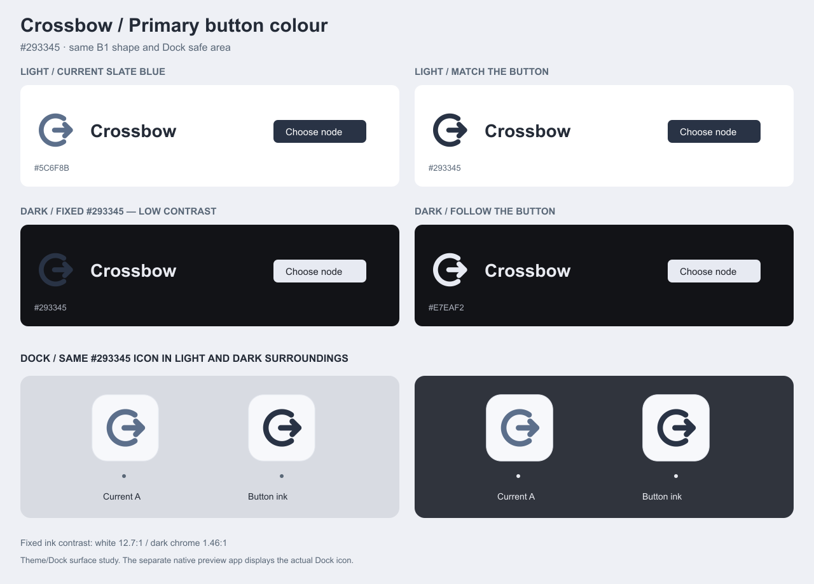

浅色主色 #293345 · 深色主按钮 #E7EAF2
#293345
#E7EAF2
固定同色：明暗界面都使用 #293345。深色下标志会明显变暗，请重点比较右侧效果。
保留浅色底板与原有安全区，系统切换明暗时保持同一图标。

这是配色提案，未修改生产品牌资源。下方 Dock 条为设计模拟；独立 AppKit 预览程序可在真实 Dock 中显示测试图标。实际应用页面只修改预览进程中的品牌色变量，不写入你的配置。